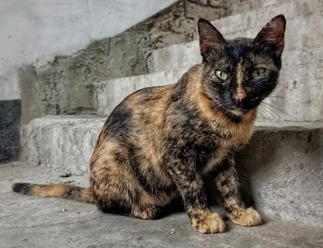
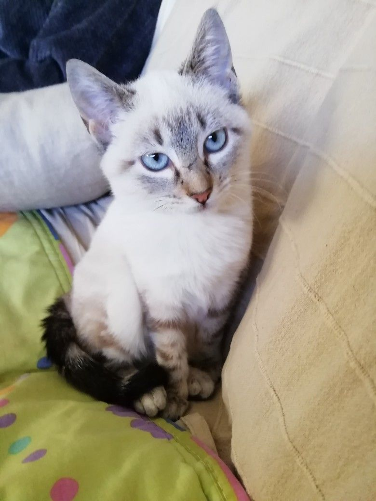

Sección de adopción
Text visual
Tipo de mascota.

Tom
Tipo de raza: Pug.
Genero: Macho.
Edad: 2 meses.
Descripción: Es un compañero muy jugueton y lleno de acción con mucho cariño por dar.
AdoptarXolo
Tipo de raza: Mestizo/Criollo.
Genero: Macho.
Edad: 5 años aprox.
Descripción: Es un compañero muy tranquilo, encantador y le encantan los mimos.
AdoptarPrincesa
Tipo de raza: Mestizo/Criollo.
Genero: Hembra.
Edad: 3 años aprox.
Descripción: Es una compañera muy imperactiva, rapida y curiosa. ¡Cuidala porqué corre!
Adoptar
Gallo
Tipo de raza: Chihuahua.
Genero: Macho.
Edad: 2 años.
Descripción: Es un compañero un tanto gruñon. Le gusta el ambiente tranquilo y es muy protector.
Adoptar